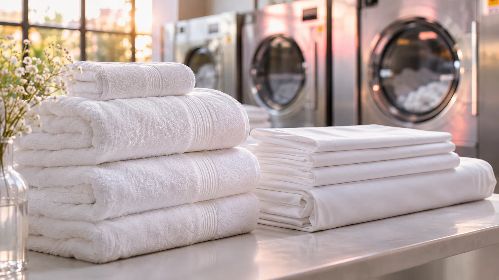
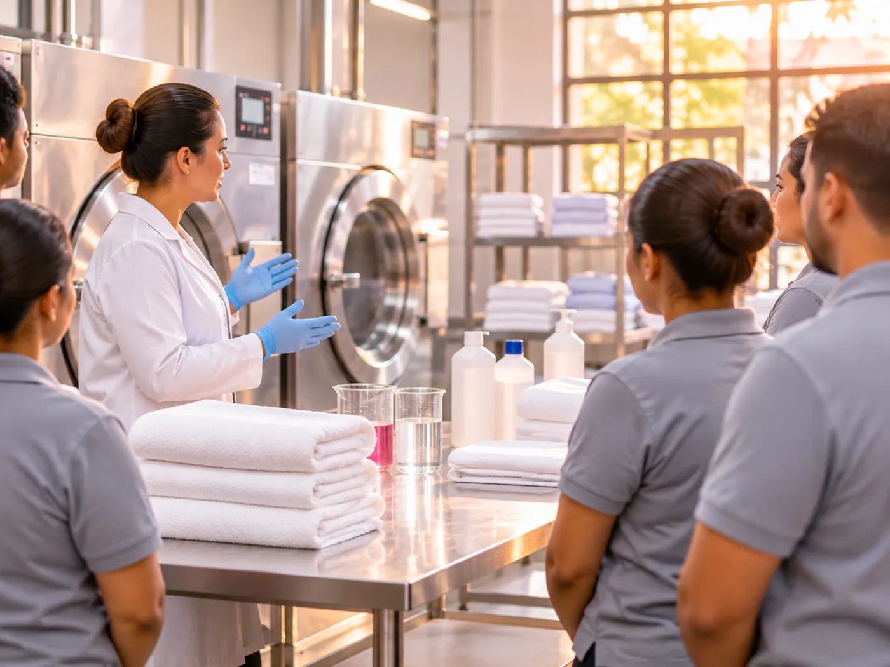
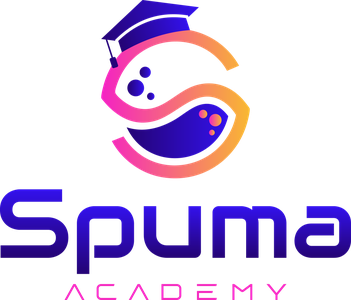

A lavanderia gastando só o necessário, com o melhor resultado.
O Grupo Spuma fabrica, aplica, opera e ensina. Entregamos o processo de lavagem completo para hotéis, clínicas e lavanderias, com custo por quilo medido todo mês.
Ninguém no mercado reúne as quatro
Fabricação
Linha química Norsan, fabricada na Bahia e notificada na Anvisa.
Aplicação
Dosagem automática, receitas por segmento e visita técnica mensal.
Educação
Spuma Academy: cursos, mentorias e equipes certificadas.
Operação
Lavanderias próprias Spuma Brilhante, onde o processo é testado antes de chegar ao cliente.
Você não compra produto. Compra resultado.
Química, equipamento, método e acompanhamento num só contrato. A sua lavanderia deixa de ser um problema.
Dosagem Spuma
Dosadora automática em comodato. Sem desperdício e sem erro de medida.
Visita técnica mensal
pH da lavagem e do último enxágue, relavagem, calibração e consumo.
Relatório de custo por kg
Uma página por mês para o gestor: R$/kg, qualidade e ações.
Um programa para cada tipo de lavanderia
Medimos, ajustamos e mostramos o resultado em números
- pH da lavagem e do último enxágue
- Calibração da dosadora com proveta
- Relavagem e qualidade do enxoval
- Custo químico por quilo, todo mês
Química identificada por cor, etapa por etapa


A escola de lavanderia profissional do grupo
Cursos gravados, mentorias ao vivo e treinamentos presenciais. Mais de 200 profissionais treinados.
Quanto custa hoje cada quilo lavado na sua lavanderia?
Falar com um especialistaVocê não compra produto. Compra resultado.
Química, equipamento, método e acompanhamento num só contrato. A sua lavanderia deixa de ser um problema.
Química por etapa
Um produto Norsan para cada etapa do processo, identificado por cor.
Dosagem Spuma
Dosadora automática em comodato. Sem desperdício e sem erro de medida.
Equipe certificada
Treinamento da sua equipe com certificado da Spuma Academy.
Visita técnica mensal
pH da lavagem e do último enxágue, relavagem, calibração e consumo.
Relatório de custo por kg
Uma página por mês para o gestor: R$/kg, qualidade e ações.
Kit Spuma Manchas
Recuperação de peças com manchas difíceis, em vez de descartar enxoval.
Sete etapas, todas em temperatura ambiente
A dosagem é calibrada pelo técnico Spuma conforme a água, a máquina e a sujidade do seu enxoval.
Medimos, ajustamos e mostramos o resultado em números
- pH da lavagem e do último enxágue
- Calibração da dosadora com proveta
- Relavagem e qualidade do enxoval
- Custo químico por quilo, todo mês
Um programa para cada tipo de lavanderia
Cada linha tem receitas próprias para sujidade leve, média e pesada.
Spuma Hotel
Hotéis, pousadas e resorts. Enxoval branco, toalhas e roupões.
- Branco e maciez que o hóspede percebe
- Teto de custo por kg em contrato
Spuma Saúde
Clínicas, hospitais e casas de repouso.
- Foco em desinfecção e rastreabilidade
- Alinhado à RDC 6/2012
Spuma Gastro
Restaurantes e cozinhas: toalhas de mesa, guardanapos e panos.
- Remoção de gordura e molhos
Spuma Uniformes
Lavanderias industriais, uniformes e panos de limpeza.
- Sujidade pesada e produtos em pó
Spuma Self
Lavanderias self-service, com a experiência da rede Spuma Brilhante.
Produtos por etapa do processo
Cada cor indica a etapa em que o produto entra. A ficha técnica e a FDS de cada produto ficam na central de documentos.
Escolha o nível de acompanhamento
Produto e suporte
Linha Norsan com receitas de uso e suporte técnico remoto.
Sistema completo
Dosadora em comodato, visita técnica mensal e relatório de custo por kg.
Sistema + Academy
Tudo do Profissional, equipe certificada, Kit Spuma Manchas e opção de custo por kg garantido.
Consultoria e implantação
Diagnóstico de lavanderia
Processo, água, máquinas, custos e qualidade.
Montagem de lavanderia
Do projeto ao primeiro ciclo: equipamentos, layout e processos.
POPs e padronização
Procedimentos escritos, cartazes e treinamento da equipe.
A escola de lavanderia profissional do grupo
Cursos gravados, mentorias ao vivo e treinamentos presenciais. Mais de 200 profissionais treinados.
Cursos gravados, mentorias ao vivo e treinamentos presenciais. Mais de 200 profissionais treinados.
Tratamento de manchas
Método Spuma PRO: oxidação, redução e recuperação de enxoval.
Química para lavanderia
Detergentes, alcalinos, alvejantes, neutralizantes e amaciantes.
Tecidos e água
Fibras, cuidados e qualidade da água para lavanderia.
Lavanderia hospitalar
Processamento de roupas de serviços de saúde.
Mentoria
Acompanhamento individual ou em grupo para crescer a lavanderia.
Equipe certificada
Treinamento da equipe do cliente com certificado.
Tudo o que a sua lavanderia precisa ter em mãos
Fichas técnicas, FDS e guias abertos para consulta. Nenhum documento "sob solicitação".
Fichas técnicas Norsan
Uma ficha por produto, com dosagem por etapa.
Em preparaçãoFichas de dados de segurança (FDS)
Atualizadas conforme a RDC 989/2025.
Em preparaçãoManual de processos Spuma Hotel
Etapas, tempos, níveis e boas práticas.
Em preparaçãoGuia de manchas
Como identificar e tratar cada tipo de mancha.
Em preparaçãoCloro ou peróxido?
Custo por kg e vida útil do enxoval, com fontes.
Em preparaçãoChecklist de visita técnica
O que medimos em cada visita.
Em preparaçãoO que muda no setor, explicado de forma prática
Toda semana, com fonte citada e o que isso significa para a sua operação.
Vamos olhar a sua lavanderia juntos
Conte como é a sua operação e um especialista Spuma retorna com um diagnóstico inicial.
- (71) 99180-7051
- comercial@spumaacademy.com.br
- Atendimento presencial
- Salvador e litoral da Bahia · Rio de Janeiro